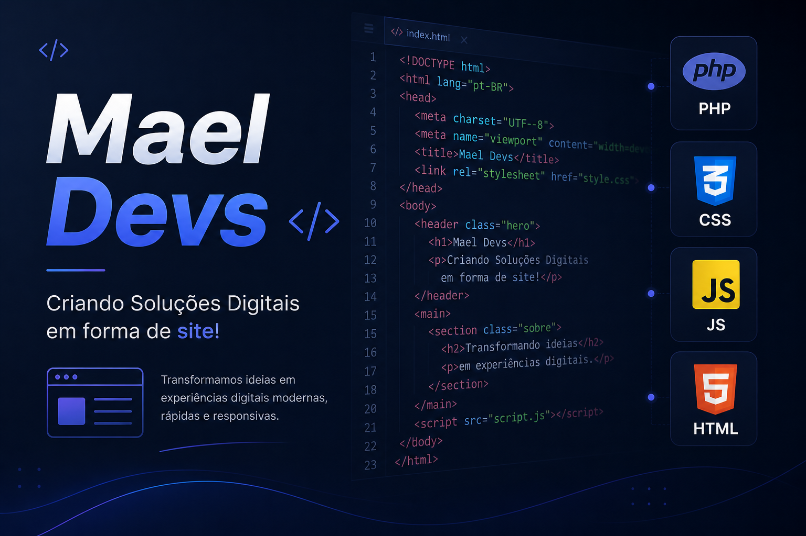

Calouro de Engenharia de Software, Sou desenvolvedor web apaixonado por transformar ideias em sistemas funcionais. Trabalho principalmente com PHP puro e gosto de manter o código limpo, organizado e sem gambiarra. Estou sempre evoluindo e buscando criar soluções que realmente funcionam.
PHP (Hypertext Preprocessor) é uma linguagem de script open source, de uso geral, amplamente utilizada no lado do servidor (server-side) para desenvolvimento web. Ele permite criar sites dinâmicos e interativos, sendo incorporado diretamente no HTML. A versão 8.5 traz melhorias como novos tipos e operadores, e é a base de grande parte da web
HTML (HyperText Markup Language) é a linguagem de marcação usada para estruturar páginas web, organizando textos, imagens, links e outros elementos.
CSS (Cascading Style Sheets) é a linguagem usada para estilizar e controlar a aparência visual de uma página HTML. Ele define o layout, cores, fontes, espaçamentos e outros estilos. Basicamente, enquanto o HTML estrutura o conteúdo, o CSS cuida do design.
JS (JavaScript) é uma linguagem de programação que traz interatividade para as páginas web. Com JS, você pode manipular elementos HTML e CSS, responder a ações do usuário, como cliques e preenchimentos de formulários, e realizar cálculos ou carregamentos dinâmicos de conteúdo sem precisar recarregar a página.